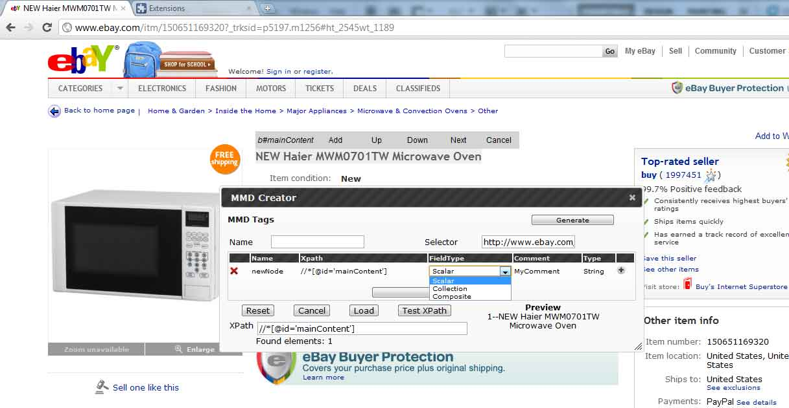
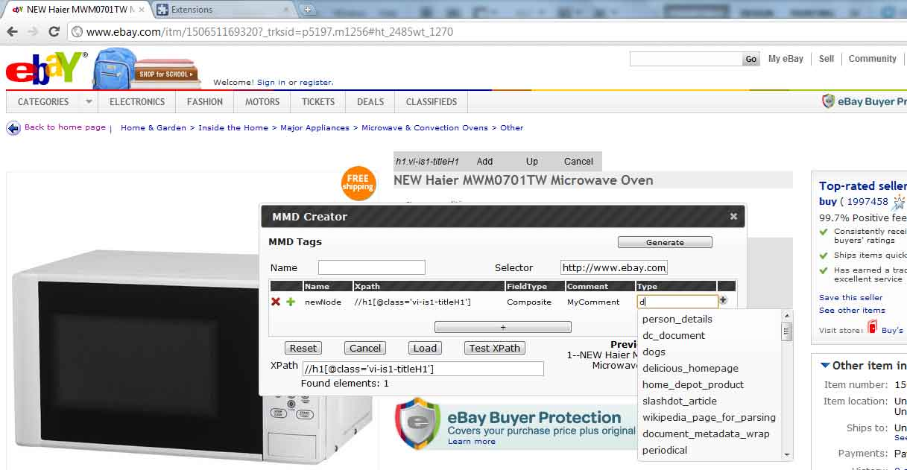

Starting
- Start Eclipse and run MMDRepositoryServer.java in MetaMetadataRespositoryService project.
- Visit any page in Chrome or FireFox (In which you have already installed Tool).
- You will have an "Activate" button in bottom right corner, click that to start Tool.

- MMD Creator, A movable and resiable Box will open.

UI interface
- name : The name of current MMD being authored.
- Selector : For url selector. Tool will automatically initialize it with page url (removing all get params).
- Xpath : Xpath of currently selected dom element or MMD Field Tag.
- Reset button : It restore Tool to its initial condition.
- Cancel button : Cancel and unselector current dom element.
- Load button : To load already authored MMD from repository. You can choose between extending and reusing.
- Test Xpath button : To test Xpath present in Xpath textbox. It will open up a box with all possible results.
- MMD Table : A ui implementation of authored MMD.
Testing Xpath
- Enter a Xapth in Xpath textbox.
- Click Test Xpath button. Preview section will show only first 5 results and Extracted Value Box will show all possible results.

Adding a Field Tag
- Right click on required dom element. An inspector section will assist you to navigate up, down, next, Prev and Add.
- Just click Add in inspector section or + button in MMD table. Xpath will be automatically generated and added.

Editing attributes of a Field Tag
- Left click on any attribute to make it editable in MMD Table e.g.


- Please note that composite/collection types will be available only when Field type is Composite or Collection else Scalar types will be avilable as String, int and ParsedURL.
- Please note presence of a green + button to add child/member when Field Tag type is Composite or Collection.
Adding Custom Attribute Field Tag
- click on + button in last column of MMD Field Tag.

- Click on + button to add custom attribute. Click on attribute name and value to edit. An auto suggest will help.
- Click ok to save.
- Please note change in color of + button in last column of MMD Field Tag to indicate presence of custom attributes.
Editing Custom Attribute Field Tag
- click on + button in last column of MMD Field Tag to open custom attributes box.

- Click on + button to add custom attribute.
Generate or Save MMD
- Click on genetare button to generate MMD in JSON format.

- Click save button (Currently this feature is not supported by Respository Service) to save MMS in repository.
Load or Extend already authored MMD
- Click on Load button. A box will open up.
- Enter url of authored MMD e.g. http://idle.slashdot.org/story/11/08/09/1356222/15-Billion-Star-Trek-Theme-Park-Coming-To-Jordan.
- Check Extend checkbox if you want to extend from authored MMD.
- Click Ok to load into Tool.